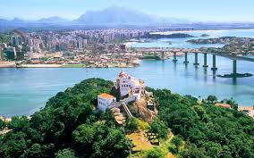

Criação de Listas e Tabelas
Lista Não Ordenada
Criação de Listas
Lista de Compra
- Arroz
- Feijão
- Leite
- Manteiga
- Maça
- Banana
- Tomate
- Macarrão
Lista Ordenada
Lista de exercícios na academia
Peito
- Supino reto com barra
- Supino inclinado com halteres
- Crucifixo reto no banco
- Peck deck (voador)
- Flexões de braço
Costas
- Puxada na frente (barra ou pulley)
- Remada curvda com barra
- Remada baixa no pulley
- Barra fixa (pull-up)
- Levantamento terra
Lista Ordenada
Receita de Bolo
Ingredientes:
- 3 Ovos
- 2 Xícaras (chá) de açúcar
- 1 xícara (chá) de óleo
- 1 xícara (chá) de leite
- 2 xícaras (chá) de farinha de trigo
- 1 xícara (chá) de chocolate em pó
- 1 colher (sopa) de fermento em pó
Cobertura (Opcional)
- 1 colher (sopa) de manteiga
- 3 colheres (sopa) de chocolate em pó
- 1 xícara (chá) de leite
- 1/2 xícara (chá) de açúcar
Modo de preparo:
- No liquidificador, bata os ovos, o açúcar, o óleo e o leite até formar uma mistura homogênea.
- Transfira para uma tigela e acrescente a farinha fe trigo e o chocolate em pó, mexendo bem.
- Por último, adicione o fermento e misture delicadamente.
- Despeje a massa em uma forma untada e enfarinhhada.
- Leve ao forno preaquecido a 180ºC por cerca de 35 a 40 minutos (faça o teste do palito)
Cobertura:
- Em uma panela, leve todos os ingredientes ao fogo baixo, mexendo até engrossar levemente.
- Despeje sobre o bolo ainda quente.
Lista Não Ordenada
🌴 Roteiro Turístico - Vitória & Vila Velha
Dia 1 - Vitória
🌅 Manhã
- Ilha das Caieiras → café da manhá com uma moqueca capixaba ou torta capixaba tradicional (melhor conhecer já cedo).
- Passeio pela Curva da Jurema → praia urbana muito bonita, boa para caminhar e tirar fotos.
🌞 Tarde
- Palácio Anchieta → prédio histórico no centro, aberto para visitação guiada.
- Catedral Metropolitana de Vitória → arquitetura neogótica impressionante.
- Almoço na região da Praça do Papa, com vista para a baía de Vitória.
🌑 Noite
- Subida ao Morro do Moreno (se quiser aventura ao entardecer, a vista do pôr do sol é incrível).
- Jantar na Rua da Lama (bairro Jardim da Penha), famoso pelo gastronômico e boêmio.
Dia 2 - Vila Velha
🌅 Manhã
- Convento da Penha → cartão-postal do Espírito Santo, com vista panorâmica da cidade.
- Vista à Fábrica de Chocolates Garoto (vale agendar com antecedência).
🌞 Tarde
- Almoço em restaurante típico de moqueca capixaba (ex: Restaurante Atlântica ou Papaguth).
- Tarde na Praia da Costa e/ou Praia de Itaparica para curtir o mar e relaxar.
🌑 Noite
- Caminhada leve pela orla da Praia da Costa.
- Jantar em restaurante à beira-mar, aproveitando frutos do mar fresquinhos.
🚗 Dicas Extras
- Se tiver mais tempo, pode incluir:
- Ilha do Frade (Vitória) - praia pequena e charmosa.
- Farol de Santa Luzia (Vila Velha) - vista incrível para o mar.
- Passeio de barco pela baía de Vitória.
- Melhor época: de março a setembro (menos chuvas).

Foto de Vitória e Vila Velha, cartões postais do Espírito Santo.